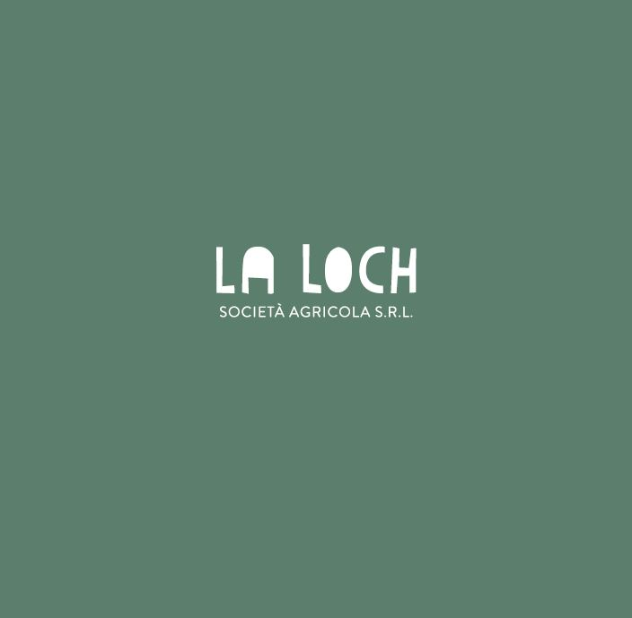

01
Pedemonte come punto di partenza.
La Loch prende forma in un piccolo comune della Valle dell'Astico, tra Veneto e Trentino. Da qui nasce il rapporto diretto con i campi, con la valle e con il ritmo concreto dell'agricoltura.

La Loch Societa Agricola S.R.L.Storia
La nostra storia comincia a Pedemonte, nella Valle dell'Astico. È una storia giovane, ancora aperta, costruita con l'idea di partire dalla terra e dalle sue possibilità reali.
Una direzione
Far crescere l'azienda restando leggibili, presenti e fedeli al territorio da cui tutto parte.01
La Loch prende forma in un piccolo comune della Valle dell'Astico, tra Veneto e Trentino. Da qui nasce il rapporto diretto con i campi, con la valle e con il ritmo concreto dell'agricoltura.
02
Apicoltura, zafferano, erbe aromatiche, patate, orzo da birra e frumento disegnano un percorso agricolo plurale ma unitario, dove ogni parte contribuisce a definire il carattere dell'azienda.
03
La Loch continua a prendere forma con una direzione chiara: crescere senza perdere precisione, mantenendo al centro il territorio e la qualità del lavoro quotidiano.
Visione
Io non posso vivere che nella mia terra; non posso vivere senza affondare in essa piedi, mani, orecchie, senza sentire la circolazione delle sue acque e delle sue ombre, senza sentire come le mie radici cercano nelle sue zolle le sostanze materne. - Pablo Neruda -
Oggi
Oggi La Loch è una realtà in crescita che mette insieme colture, territorio e presenza diretta. Il progetto guarda avanti senza perdere il legame con il luogo da cui nasce.